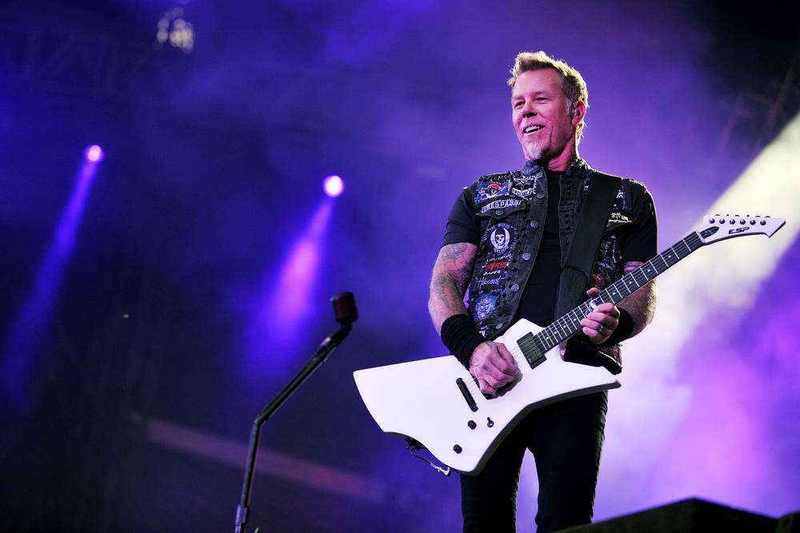

In the early days of the band, Metallica experimented with a few different vocals and guitar combinations, essentially creating a setup similar to that of British metal band Diamond Head, another major influence on Hetfield. Some of the options considered included adding another guitar player, having John Roads play lead guitar, as well as asking John Bush from Armored Saint (who later joined Anthrax) to sing for the band. The finalized line-up of the band became Hetfield (lead vocals and rhythm guitar), Lars Ulrich (drums), Dave Mustaine (lead guitar), and Ron McGovney (bass) who was soon replaced by Cliff Burton. Hetfield referred to their early sound as power metal. The term "thrash metal" was first used when Kerrang journalist Malcolm Dome described the Anthrax song "Metal Thrashing Mad" in an issue of Kerrang in February 1984.[8] From 1982 to 1983, Mustaine's alcoholism sparked heated altercations between himself and Hetfield.[9] Mustaine also once poured beer onto McGovney's bass[9] nearly causing serious damage. On April 1, 1983, the band recruited lead guitarist Kirk Hammett from the band Exodus and 10 days later Hetfield and Ulrich officially removed Mustaine from the band due to his alcoholic tendencies.[9][10] Mustaine was sent home on a 4-day bus journey, and went on to form the heavy metal band Megadeth. Until the mid-1990s, Hetfield recorded all rhythm tracks and most harmony tracks.[citation needed] Since the recording of Load, Hammett has been recording rhythm guitars as well. Hetfield occasionally plays guitar solos on songs such as "Nothing Else Matters", "My Friend of Misery", "Just a Bullet Away", the outro solo on "The Outlaw Torn", the second solo on "To Live Is to Die", the first solo on "Suicide and Redemption", the first interlude solo on "Master of Puppets", the harmonized solo on "Orion" and the introduction for "The Day That Never Comes". He also writes the majority of the guitar harmonies, as well as writing the lyrics, vocal melodies, and co-arranging the songs with Ulrich.
Hetfield has been involved in a number of onstage accidents, most notable being an incident with pyrotechnics at Olympic Stadium in Montreal during the Guns N' Roses/Metallica Stadium Tour on August 8, 1992. Hetfield was the victim of a severe pyrotechnics accident during the song "Fade to Black", in which a pyrotechnic charge exploded. Hetfield's guitar protected him from the full force of the blast; however, the fire engulfed his left side, burning his hand, arm, eyebrows, face and hair. He suffered second and third-degree burns, but was back on stage 17 days later, although his guitar duties were delegated to former guitar tech and Metal Church guitarist John Marshall for four weeks while he made a full recovery.[11]
As I was goin' over
The Cork and Kerry Mountains
I saw Captain Farrell
And his money, he was countin'
I first produced my pistol
And then produced my rapier
I said, "Stand and deliver or the devil he may take ya"
I took all of his money
And it was a pretty penny
I took all of his money,
Yeah, and I brought it home to Molly
She swore that she loved me,
No, never would she leave me
But the devil take that woman,
Yeah, for you know she tricked me easy...
| Year | Title | Notes |
|---|---|---|
| x | y | z |
It's all fun and games 'till someone loses an eye, then it's just fun you can't see.
I like playing music because it's a good living and I get satisfaction from it. But I can't feed my family with satisfaction.
If I hadn't have had music in my life, it's quite possible I could be in here. Or nor even in here, be dead — and I'd much rather be alive.